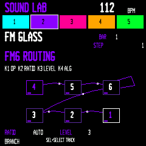
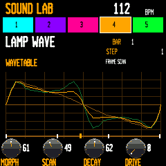
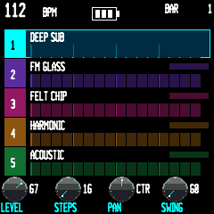
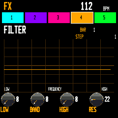
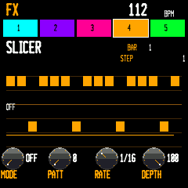

SLAP-5 v0.1.31 hardware test
Experimental FM-1 build FM-1_75000131. Installer and rollback · Studio
- Back up your songs. Use a disposable five-track project. V12 saves with active filters may be unreadable on older firmware.
- On HOME, select FM GLASS and press EDIT. Look for the six numbered operators. Turn ALGORITHM right once for FM6 ROUTING. Play a key and listen while K4 changes the algorithm. The following detents open OPERATORS, ENV and FEEDBACK. Turn SELECT to pick an operator on the operator and envelope pages. Hold SEL while turning SELECT to change tracks there.
- In Sound Lab choose LAMP WAVE with PRESETS. From the initial EDIT page turn ALGORITHM right once to WAVETABLE. Play a note and turn K1 Morph and K2 Scan. Look for the bright active wave between its reference frames and the frame position below.
- Open FX and use ALGORITHM to select FILTER and SLICER. Try the filter controls and watch the curve. Enable Slicer, play a pattern, and look for the cell cursor and capture or replay status.
- Play dense chords and drums at 112, 137 and 160 BPM. Re-enter EDIT during playback. Try HOME scrolling, recording, MIXER K3/K4 filter sweeps and the visualizers. Check for crackles, distortion, lost inputs and tearing.
- Hold GLO five seconds for diagnostics. Reset counters before a timed playback run using K3 in diagnostics. Record callback P95/P99/peak, misses, XRUNs and the Core 1 status if audible faults occur. A brief written summary is enough.
240×240 software captures
Panel visibility and performance are awaiting FM-1 results.

FM6 routing

Wavetable frame scan

HOME on simulated battery power

FILTER

SLICER